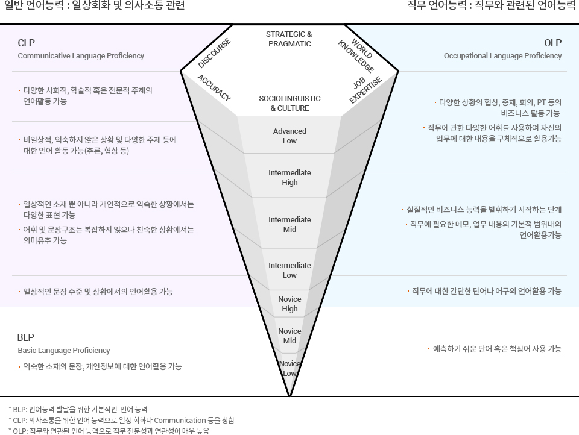

외국어역량 모델-MLP (Multi Language Proficiency Model)
ACTFL Proficiency Guidelines를 기반으로 멀티캠퍼스 독자적인 일반·직무언어체계를 완성하였습니다.
외국어 역량 모델은 수준별 외국어 역량 및 직무 외국어 역량을 분석하여
각 역량별 핵심 언어능력을 체계적으로 설명합니다.

ACTFL Proficiency Guidelines를 기반으로 멀티캠퍼스 독자적인 일반·직무언어체계를 완성하였습니다.
외국어 역량 모델은 수준별 외국어 역량 및 직무 외국어 역량을 분석하여
각 역량별 핵심 언어능력을 체계적으로 설명합니다.